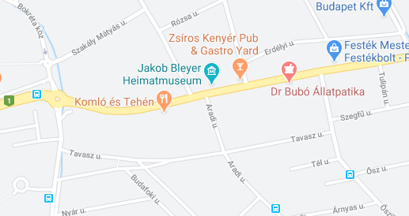

Nyitvatartás
OPENING HOURS
| Day |
Open |
Close |
| Monday-Friday |
9:00 |
21:00 |
| Saturday |
10:00 |
| Sunday |
Closed |
| ©2020 |
- Hétfő 10.00-20.00
- Március 21 hétfő ünnepnap - zárva
- Kedd 10.00-20.00
- Szerda 10.00-20.00
- Csütörtök 10.00-20.00
- Péntek 10.00-20.00
- Szombat 12.00-24.00
- Vasárnap 12.00-24.00
Elérhetőség
2040 Budaörs Templom tér 1.
Tel: +3623/123-456
Megközelítés
BKV Busszal Budapestről
Tatabánya felől
